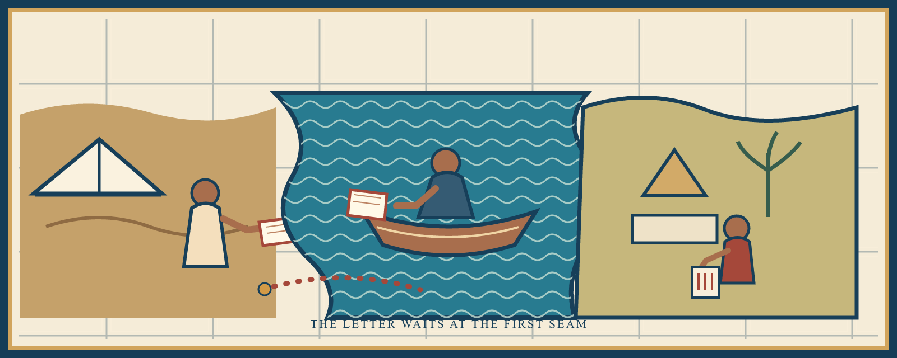
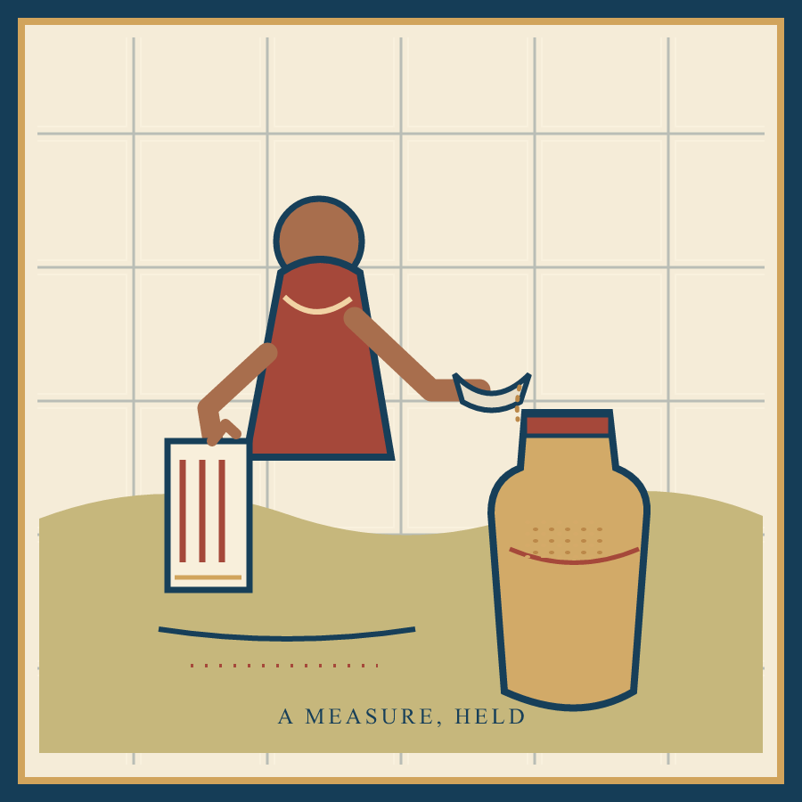
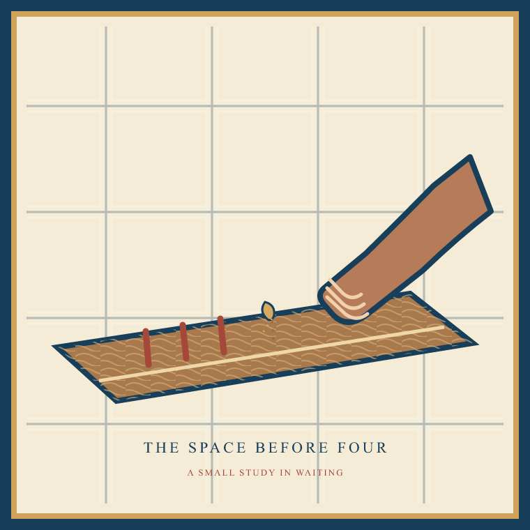

A Letter in the River
The letter waits at the first seam. An imagined scene after The Story of Sinuhe; the courtly story gives one view of a world, not the whole of it. The ferry, keeper, storehouse, and this crossing are inventions. Contemporary digital tile images by Zulayj.



Sound - 16 seconds
Three close wooden knocks, one faint knock after a pause, eight soft tile clicks, and filtered river noise continuing underneath.
An Unentered Measure
Three red cuts in the board. The fourth keeps its pale breath. A grain rests on the joint. The river spends no tally. The waiting hand warms wood. A blue seam passes under it. The letter keeps its fold. No mark names the return.